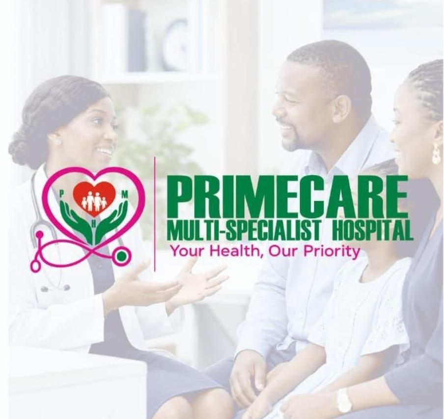

Your Health, Our Priority
We provide comprehensive medical care for individuals and families — from primary and chronic care to maternal health, surgery, diagnostics and emergency services. Our expert team is committed to safe, clean and modern healthcare 24 hours a day.

Welcome to Primecare Multi-Specialist Hospital, a trusted healthcare facility located at 45B Awka Road, beside Chicken Republic, Onitsha. We combine clinical excellence with genuine compassion to deliver care that puts every patient first.
Whether you need a routine check-up, management of a chronic condition, maternity services, surgical care, laboratory tests, ultrasound, emergency attention or pharmacy support — our dedicated medical team is here for you and your family.
Comprehensive healthcare under one roof — designed for individuals, mothers, children and families across Onitsha and surrounding communities.
Ongoing medical support for everyday health needs and long-term conditions.
Specialised care for mothers and children at every stage.
Skilled surgical care with attention to safety and recovery.
Expert management of adult medical conditions.
Accurate testing to support timely diagnosis and treatment.
Round-the-clock response and quality medicines.
We believe quality healthcare should be accessible, respectful and reliable. Here is what sets us apart.
Our doctors, nurses and specialists bring experience and dedication to every consultation and procedure. You receive care from professionals who prioritise your recovery and comfort.
We maintain high standards of hygiene and infection control so that every patient — from newborns to the elderly — can receive treatment in a safe and welcoming space.
Medical needs do not follow a timetable. Our emergency and inpatient services operate around the clock so help is available whenever you need it.
We invest in practical, up-to-date equipment for diagnostics, surgery, maternity and general care so that accurate assessment and effective treatment are possible on site.
Your dignity, comfort and understanding matter. We take time to explain options, answer questions and involve you in decisions about your care.
Situated at 45B Awka Road, beside Chicken Republic in Onitsha, we are easy to find and accessible for families across the city and nearby communities.
Call or message us on WhatsApp — our team is ready to help you and your family.